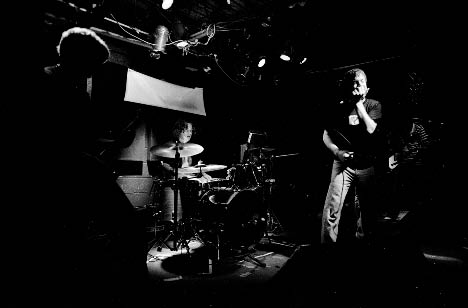
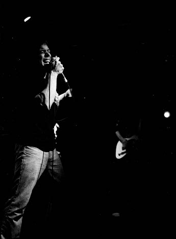
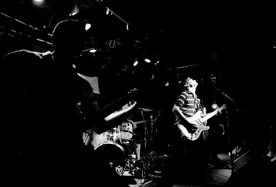
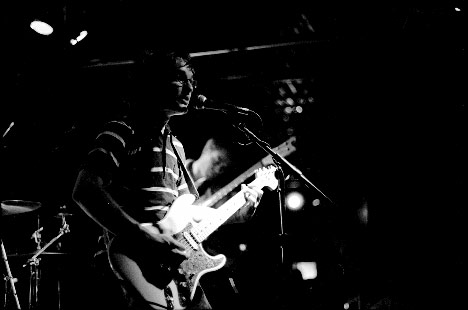
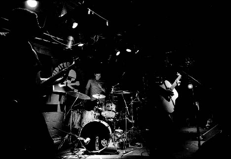
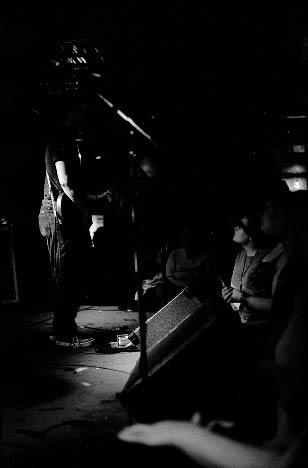
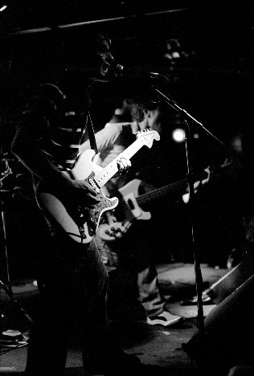

Big Orange Crayonmusical thingsClearmotive and Jupiter Sunrise Valentine's, Albany, NY September 8th, 2002 I had fun at this show, and I would write more about it, but this is already a week late getting up and it's one in the morning and I've been doing optics homework all night, so whatever I wrote if I was more ambititious wouldn't make sense anyway. Moving on... Pictures: These aren't the best pictures I've ever done, but nobody was standing under the spotlights most of the time, so that's just the way things go sometimes... Clearmotive  I didn't hear too much of Clearmotive because I got there late...  Jupiter Sunrise      Camera stuff: Body: Nikon FM2n Lenses: 50mm f/1.4 and 24mm f/2.8 Nikkors Film: Fuji Neopan 1600 exposed at 3200, developed in Rodinal (1+100) for 25 minutes at 21 degrees (inversion and a little twirl every two minutes...) Another two or three minutes would have been better, but it wasn't that bad. Please don't use these elsewhere unless you are in one of the bands or are a nice person. |